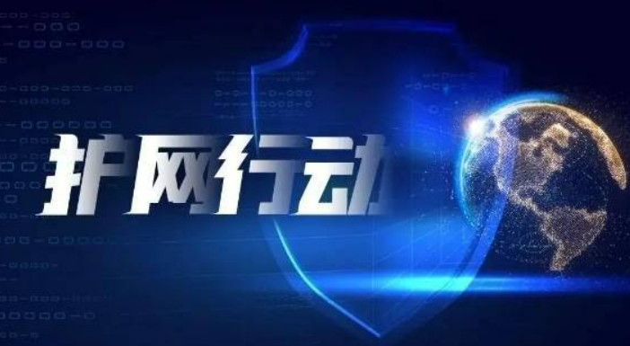

day1-HW基本规则介绍（下午）
问？：请问哪位同学知道第一次hw是什么时候开始的
一、HW起源
2016年，公安部会同民航局、国家电网组织开展了 “护网2016”网络安全攻防演习活动。
同年，《网络安全法》颁布，出台网络安全演练相关规定：关键信息基础设施的运营者应“制定网络安全事件应急预案，并定期进行演练”。
自此“护网行动”进入人们视野，成为网络安全建设重要的一环。

二、发展和基本规则介绍
发展
2016年：公安部会同民航局、国家电网
2017年：旅游局、北京食药监局、北京自来水集团、央视网、中国人寿、小米科技等
2018年：税务、电力、电信、银行、铁路、财务、广电、水利、教育、互联网、检察等
2019年：行业更广、范围更大、运营商行业
基本规则
攻击靶心由各单位自报或公安部指定，公安部一般提前3周通知各单位参演靶心，以及攻击的起始时间与结束时间，各单位可在此期间进行防御准备。
评分原则：
1、根据安全防护能力强弱对防守方进行排名
2、初始分5000分
3、目标系统被拿下不参加排名，则护网失败
4、攻击方提交 报告1小时内，防守方发现来自攻击方的行为上报不扣分
5、主要考核参演单位监测发现能力、应急处置能力与公安机关配合能力
防守方减分规则：
•获取权限：
•10分一台终端权限（不超过200分）
•20分一个webshell权限（不超过300分，特重要加20分）
•20分一个普通40分一个管理员系统邮箱VPN等（不超过800，特重要加60分 ）
•60分普通100分管理服务器（不超过1200分，特重要加100分）
•300分管理员域控服务器权限（不超过3000分、特重要加300分）
•50分接入层，100分汇聚层路由交换防火墙（不超过1000分，特重要加100-200分）
•其他设备由裁判组核定
防守方加分规则：
•发现攻击：
•50分一个木马攻击（不超过500分，提交截图证据）
•20分一个钓鱼邮件（不超过200分，提交分析报告和wml格式文件）
•50分一个漏洞攻击（不超过500分，提交分析报告和攻击负载附件）
•消除威胁：
•50分一个webshell木马（不超过500分，提交木马样本分析报告控制流量证据等）
•20分一个系统服务新增账号（不超过200分，提交源ip、日志、流量证据等）
•50分一个主机新增账号（不超过500分，提交源ip、日志、流量证据等）
•配合应急处理：
•高效+300一般+200差-100应急处理（最高300分，最低-100分）
三、红队常见攻击思路
攻防第一定律：只要是代码，都有漏洞
攻防第二定律：资产越重，机会越多
1、侦查追踪：攻击者搜寻目标弱点，具体手段如收集钓鱼攻击用的登录凭证和信息
2、武器构建：使用漏洞和后门制定一个可发送的武器载体
3、载荷投递：将网络武器包向目标投送，如发送一封带有恶意链接的欺诈邮件
4、漏洞利用：在受害的系统上运行利用代码
5、安装注入：在目标位置安装恶意软件
6、命令控制：为攻击者建立可远程控制目标系统的路径
7、目标达成：攻击者远程完成其预期目标
四、案例、技战法分享
防守方不仅要适应红队攻击视角，还要熟悉攻击的手法和“套路”，这样才能“以子之矛攻子之盾”。
攻击技战法一：全面信息收集
信息收集是攻击第一步也是最重要的一步，安全圈有句专业术语叫“攻击的本质在于信息收集”，足以看出信息收集的分量了。红队在发起攻击前，会尽可能多的搜集攻击目标信息，做到知己知彼，直击目标最脆弱的地方。
攻击者搜集的信息包括：目标组织的人员信息、邮箱，VPN，组织架构、网络资产、技术框架及安全措施信息。分支机构、关联公司、外包公司、投资公司等等。
一方面，攻击者会在公开渠道收集信息，如：搜索引擎、GitHub、社交网络、ICP、备案库、BGP归属、社工库、Fofa 、shodan、官方网站、主域名、子域名，旁站；利用证书透明原则、目标组织的TLS/SSL证书等手段监控新部署资产信息从而进行打新。
另一方面，攻击者也会利用自动化工具或平台进行目标资产梳理，精准识别资产指纹，记录攻击目标资产的详细类型，以便对应到可进行利用的漏洞。
此外，利用社会工程学类进行信息收集的行为也不可小觑，包括：邮件钓鱼、伪装接近关键人物、伪装潜入核心办公区、记录工牌样式、大楼门卫换班情况等。
攻击技战法二：云端陷落
随着云的流行和天然优势，越来越多的企业开始部署和使用混合云，但是也产生了相应的安全问题，攻击者也开辟了新的攻击路径。
例如，越来越多的企业将系统部署到私有云中对外提供服务，如：web服务、OA、邮箱等。攻击者通过私有云的0day进行虚拟机逃逸，拿下私有云的云管平台，以云管平台为跳板，直接攻击内网系统。
攻击技战法三：不以小而不为
1.经过了两天的正面猛烈攻击后，未能撕开口子，小看了供应链或下属单位的资产
2.收集和摸清使用的供应链产品或者供应链企业，在这些供应链或者企业上寻找漏洞，得到新的攻击路径或者切入点，就能够从源头上上摧毁信任
3.收集和排查目标系统中使用的供应链，用了哪些第三方产品或哪些厂家提供的产品或者服务，收集对应的漏洞，或者找到源码进行审计，储备0day。
4.收集提供开发或者服务的供应链企业或者下属单位，下属监管单位等，可能存在直通内网或者专网互联的情况。
5.利用挖掘的漏洞进行攻击供应链或下属单位，获取到一定的权限后，从内部网络横向到核心靶标
6.从侧通道进行了隐蔽的攻击
攻击技战法四：蜜罐诱捕
1.安全设备发现redteam已经撕开了口子，正在提权
2.迅速制作类似旁侧资产的蜜罐进行诱捕
3.在蜜罐的服务器中，放入一些引诱redteam下载点击的文件，如vpn账号密码以及客户端，运维监控系统账号密码.word
4.redteam上线，进行人物社交的信息收集
5.浏览器网址信息，计算机名称，微信文件等
6.结合社工库进行定位到真人